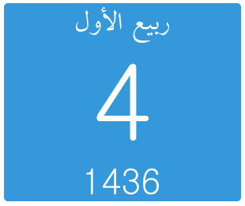

Getting Started
Welcome
Hijri Date is a simple widget and API for providing Hijri date in a simple and customizable way.

Features
- Responsive widget to fit in different sizes.
- Customizable color for widget.
- A JSON API for services.
- Ability to choose computer calculations or official date by Egyptian Dar-Aliftaa.
- An offset for fine tuning errors.
- Choise of month name or number.
How to use
This a quick guide to get you familiar with the current options. Please keep visiting to know about new features.
The following is the base URL for the widget with the default options. The base URL is sufficient for working:
/widget.php
- iftaa_api Option
If set to 1, it will skip calculations and return the date announced by Egyptian Dar-Aliftaa.
/widget.php?iftaa_api=1
/widget.php?offset=-1
- color Option
If set to a six-character hexcode, it will override the default color.
/widget.php?color=34495e
API
The following is the base URL for the API. It is not sufficient for working without iftaa_api or d,m,y options:
/api.php
- iftaa_api Option
If set to 1, it will skip calculations and return the date announced by Egyptian Dar-Aliftaa in a bar-separated format.
/api.php?iftaa_api=1
- d,m,y Options
By providing the day, month, and year of today's (or any day) Julian calendar, the result is the Hijri date in a bar-separated format.
/api.php?d=14&m=8&y=2013
/api.php?d=14&m=8&y=2013&offset=1
- month_number Option
If set to 1, it will return the date with the month part as a number instead of text.
/api.php?d=14&m=8&y=2013&month_number=1